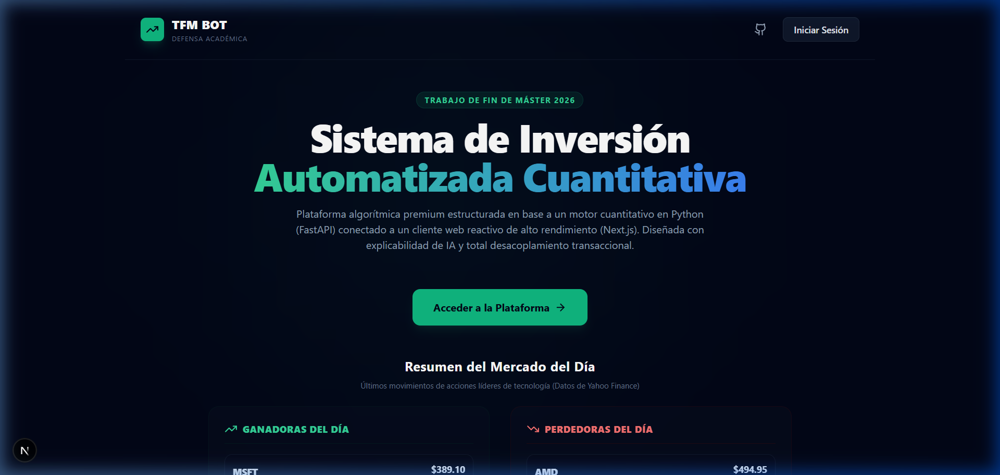
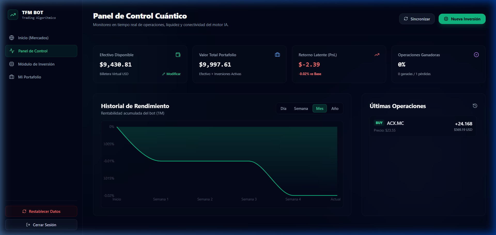
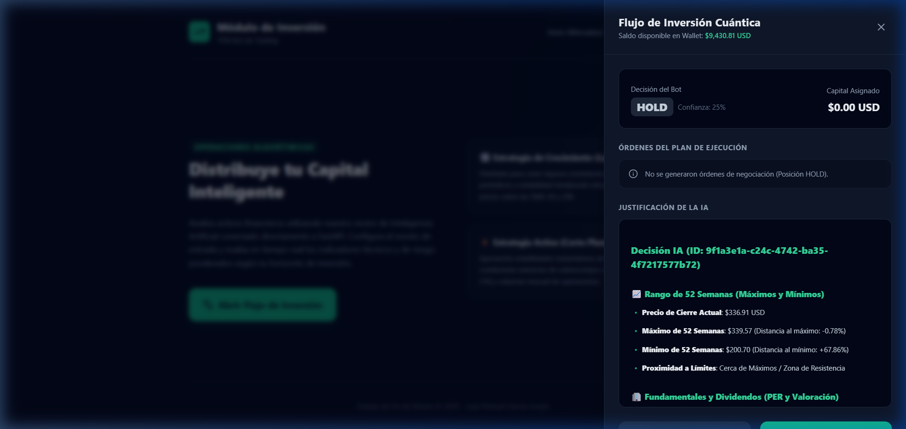
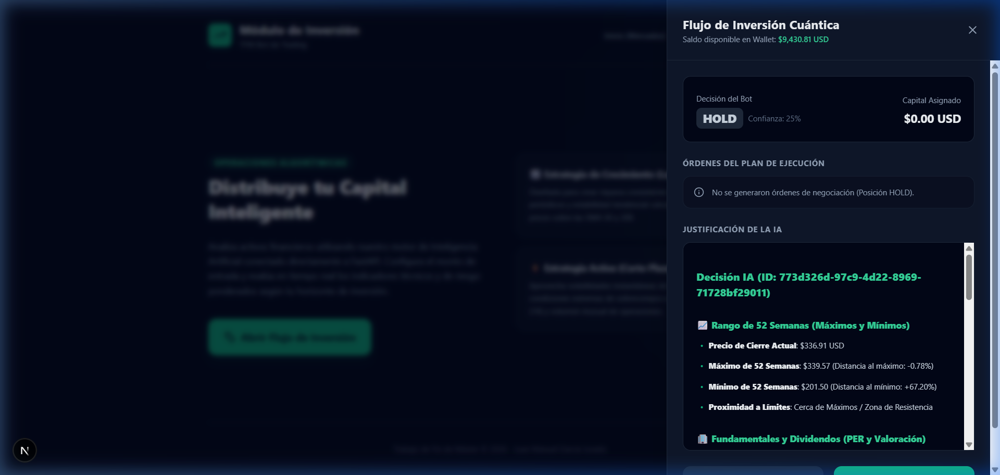
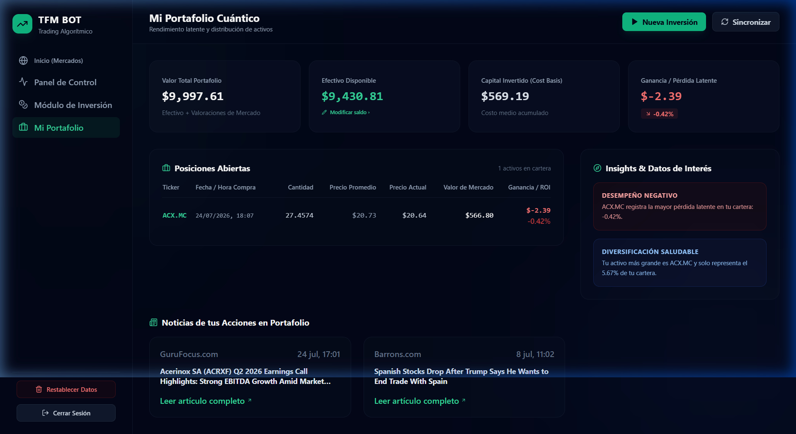

TRABAJO DE FIN DE MÁSTER (TFM) • CONVOCATORIA 2026
Sistema de Inversión Automatizada Cuantitativa
🎯
Detalles del Proyecto
- Autor: Juan Manuel Garcia Jurado
- Enfoque: Negociación Cuantitativa Explicable + Desacoplamiento de Brokers + Gestión Multicapa de Riesgos.
- Tecnologías Core: Next.js 15 (React 19), FastAPI (Python), Supabase (PostgreSQL + Realtime), TailwindCSS.
- Despliegue Producción: Vercel Demo Online ↗
Arquitectura Desacoplada: Permite conectar el motor cuantitativo a cualquier broker profesional (Alpaca, IBKR) sin refactorizar la lógica analítica.

Vista Principal de la Plataforma (Producción)
Haz clic para ampliar 🔍
PROBLEMATICAY MOTIVACIÓN
El Fenómeno de "Caja Negra" en Bots Retail
⚠️
Limitaciones en Herramientas Actuales
- Opacidad Analítica (Black Box): Los bots comerciales toman decisiones de compra/venta sin explicar los criterios técnicos o fundamentales utilizados.
- Ausencia de Gestión Holística de Riesgo: Se ejecutan órdenes aisladas sin considerar la correlación de activos ni el límite de concentración por emisor.
- Acoplamiento Rígido: Lógica de trading estrechamente ligada a APIs propietarias (MetaTrader, Binance), dificultando la migración.
💡
Solución Desarrollada en este TFM
- Explicabilidad IA (Explainable AI): Justificaciones cuantitativas detalladas redactadas en Markdown estructurado tras cada análisis.
- Filtros Estrictos de Riesgo: Límites automáticos de sobreconcentración (máx. 30%) y penalizaciones por Drawdown histórico (> 25%).
- Patrón Adapter (Broker-Ready): Abstracción completa entre el motor de scoring y las APIs de ejecución transaccional.
Criterio Clave: Transparencia absoluta ante el inversor sobre el porqué de cada recomendación financiera.
OBJETIVOS Y ALCANCE
Pilares Fundamentales de la Plataforma
📊 Pilar 1: Explicabilidad Cuantitativa
Generación de reportes detallados y reproducibles basados en 90 días de datos técnicos y fundamentales.
Markdown con pesos, RSI, PER y Score final
🔌 Pilar 2: Arquitectura Desacoplada
Patrón de diseño IBrokerAdapter para aislar el motor analítico de las APIs transaccionales.
Listo para Alpaca / Interactive Brokers
🛡️ Pilar 3: Seguridad Multicapa de Capital
Reglas matemáticas en tiempo de ejecución para prevenir sobreexposición y drawdowns severos.
Control dinámico de exposición
⚡ Pilar 4: Persistencia y Realtime
Sincronización instantánea de billetera y operaciones mediante WebSockets y Supabase.
Estado global sin recarga de página
ARQUITECTURA DE SISTEMAS
Flujo Integrado de Datos y Componentes
graph TD
subgraph Frontend ["Frontend (Next.js 15 Client)"]
UI["React Views (/dashboard, /invest)"] -->|Zod Validation| Hook["useInvestmentSession"]
Hook -->|API Request| APIProxy["Next.js API Proxy"]
end
subgraph Backend ["Backend (FastAPI Engine)"]
APIProxy -->|CORS Safe POST| Router["Trading Router"]
Router -->|Inyecta Depends| Dependency["get_broker Dependency"]
Router -->|Ejecuta Inferencia| AIEngine["AI Quantitative Engine"]
AIEngine -->|Quotes & Financials| MarketData["Market Data Service"]
MarketData -->|Caché LRU / Redis| Ref["Yahoo Finance API"]
Router -->|Plan de Órdenes| Executor["Order Executor Service"]
Executor -->|Call Interface| Adapter["IBrokerAdapter"]
Adapter -->|Simulación ACID| DemoBroker["Demo Broker Implementation"]
Adapter -.->|Producción| Alpaca["Alpaca / IBKR APIs"]
end
subgraph Cloud ["Persistencia (Supabase Cloud)"]
DemoBroker -->|Insert Session & Trades| Postgres["PostgreSQL DB"]
Postgres -->|Realtime WebSockets| UI
end
DEMOSTRACIÓN EN VIVO
Panel de Control Cuántico (Dashboard)
📈
Métricas del Panel
- Valor Total de Cartera: Suma automatizada de liquidez ($9,430.81) más valor de mercado de posiciones abiertas.
- Rentabilidad Latente (PnL): Monitoreo de pérdidas/ganancias no realizadas en dólares y porcentaje vs capital base.
- Historial de Rendimiento: Gráfico dinámico de evolución temporal acumulada.
- Acciones Rápidas: Botones de sincronización e inicio directo de nuevas estrategias de inversión.

Interfaz de Usuario en Producción (Vercel + Supabase)
Haz clic para ampliar 🔍
MOTOR ALGORÍTMICO
Criterios de Evaluación y Scoring
📐
Indicadores Cuantitativos
- Tendenciales: SMA20, SMA50, SMA200 y cruces exponenciales EMA12/EMA26.
- Impulso / Volatilidad: RSI14 (Niveles de sobrecompra > 70 / sobreventa < 30), MACD e histogramas de volumen.
- Riesgo: ATR14 (Average True Range) y Drawdown Máximo Histórico.
- Fundamentales: PER activo vs PER sectorial, Dividend Yield anualizado y fechas ex-dividendo.
🧮
Fórmula de Scoring
Score = Σ (Factor_i × Ponderación_i) ∈ [0, 10]
| Score Calculado | Recomendación IA | Acción Sugerida |
|---|---|---|
| Score ≥ 7.0 | BUY | Ejecutar compra de acciones según capital asignado. |
| Score ≤ 3.0 | SELL | Cerrar/Reducir posición existente en cartera. |
| 3.0 < Score < 7.0 | HOLD | Mantener liquidez / No asumir exposición innecesaria. |
MODULO DE INVERSIÓN
Estrategias por Perfil de Inversor

Configuración de Capital y Perfil de Estrategia
Haz clic para ampliar 🔍

Resultado del Análisis Cuantitativo en Tiempo Real
Haz clic para ampliar 🔍
EXPLICABILIDAD DE LA IA
Justificación Transparente en Markdown
📜
Estructura del Reporte Emitido
# Decisión IA: HOLD [AAPL]
**Confianza**: 25% | **Fecha**: 2026-07-28 UTC
## 📊 Rango de 52 Semanas
- Precio Actual: $336.91 USD
- Máximo 52 Semanas: $339.57 (-0.78%)
- Proximidad: Zona de Resistencia (Cerca de Máximos)
## 🏢 Fundamentales y Dividendos
- P/E ratio: 31.4 (Valoración justa vs sector)
- Rentabilidad Dividendos: 0.55%
## ⚖️ Gestión de Riesgo
- Decisión: No asumir posiciones de compra en máximos
- Plan de Ejecución: 0 órdenes enviadas al Broker
🛡️
Filtros Automáticos de Riesgo
- Filtro de Sobreconcentración: Si un activo supera el 30% del valor total de la cartera, la orden de compra se bloquea forzando
HOLD. - Filtro de Drawdown Elevado: Si el activo ha sufrido una caída superior al 25%, el bot aplica un descuento automático del 50% en el capital asignable.
- Explicabilidad Integrada: Las razones matemáticas exactas quedan almacenadas en Supabase para auditoría académica.
GESTIÓN DE PORTAFOLIO
Supervisión de Activos y Noticias en Vivo
💼
Capacidades del Portafolio
- Desglose de Posiciones: Muestra activos en cartera (ej. Acerinox ACX.MC), precio medio vs actual y valor actualizado.
- Insights de Salud Financiera: Genera avisos automáticos sobre diversificación (ej. "Tu activo más grande representa solo el 5.67% de tu cartera").
- Noticias en Tiempo Real: Artículos financieros contextuales extraídos automáticamente para las empresas en cartera (GuruFocus, Barron's).

Vista de Portafolio en Producción (Posiciones + Noticias)
Haz clic para ampliar 🔍
PERSISTENCIA Y CALIDAD
Modelo Relacional (ERD) y Pruebas
erDiagram
USERS {
uuid id PK
text email UK
enum role
timestamptz created_at
}
WALLETS {
uuid id PK
uuid user_id FK
decimal balance
timestamptz last_updated
}
AI_TRADING_SESSIONS {
uuid id PK
uuid user_id FK
varchar strategy_type
decimal available_capital
text ai_reasoning
enum status
}
TRADES {
uuid id PK
uuid session_id FK
varchar symbol
enum action
decimal quantity
decimal price
}
USERS ||--o{ WALLETS : owns
USERS ||--o{ AI_TRADING_SESSIONS : executes
AI_TRADING_SESSIONS ||--o{ TRADES : generates
🧪
Estrategia de Calidad, Tests y Seguridad
- Pruebas Unitarias (69/69 Pasadas): 85% de cobertura total de código en
backend/tests/. - Hardening de Seguridad: Políticas de Row-Level Security (RLS) en Supabase PostgreSQL por
auth.uid(). - Validación Automatizada: Script
infra/final_validation.shverificando 6/6 criterios de auditoría.
DEFENSA TFM • CONCLUSIONES
Conclusiones y Trabajo Futuro
🏆
Logros del Trabajo
- Explicabilidad Alcanzada: Eliminación completa de la "caja negra" mediante informes analíticos estructurados.
- Desacoplamiento Exitoso: Implementación limpia del patrón
IBrokerAdapterpara entornos de prueba y producción. - Control de Riesgos: Reglas automáticas en tiempo real contra sobreconcentración y drawdown.
- Plataforma Desplegada: Disponible y operativa online en Vercel + Supabase.
🚀
Líneas de Trabajo Futuro
- Conexión a Broker Real: Despliegue del adaptador para la API Live de Alpaca Markets o Interactive Brokers.
- Motor de Backtesting: Simulación histórica multi-año con estimación de costes de deslizamiento (slippage).
- Modelos de ML Avanzados: Integración de modelos de procesamiento de lenguaje natural (LLM) para análisis de sentimiento de noticias.
¡Muchas gracias por su atención! Quedo a disposición del tribunal para la turno de preguntas.